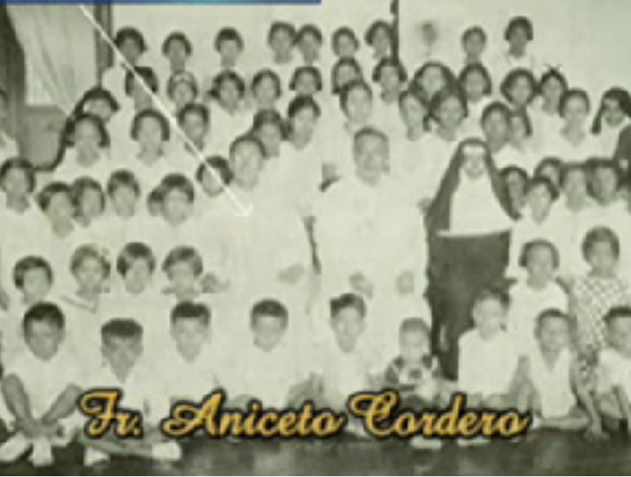
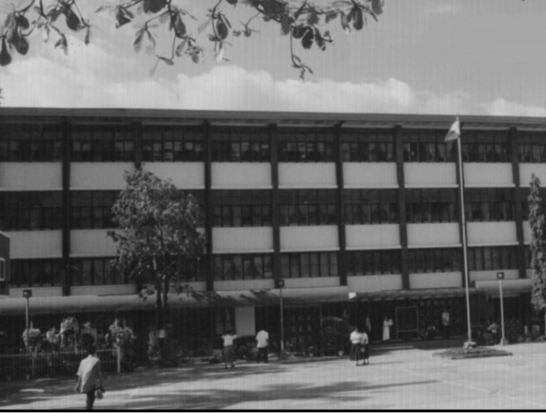
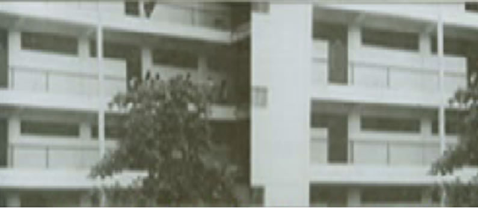
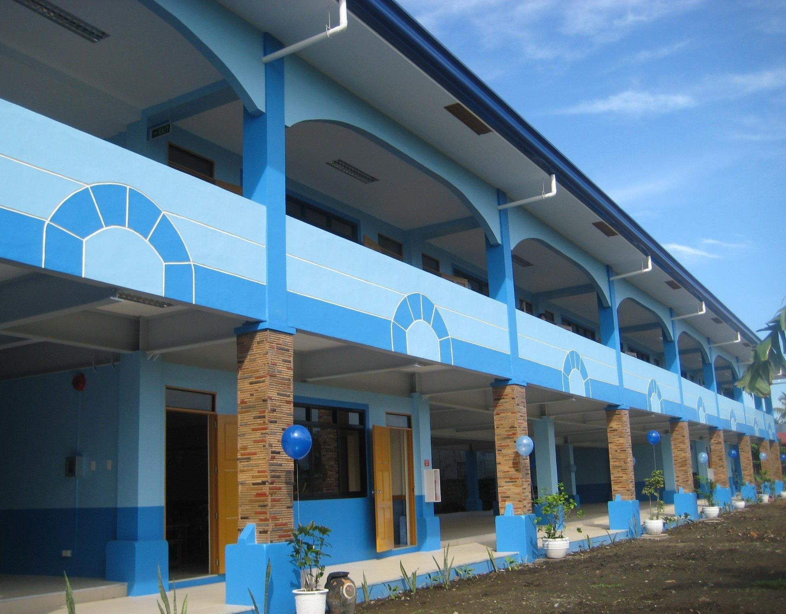
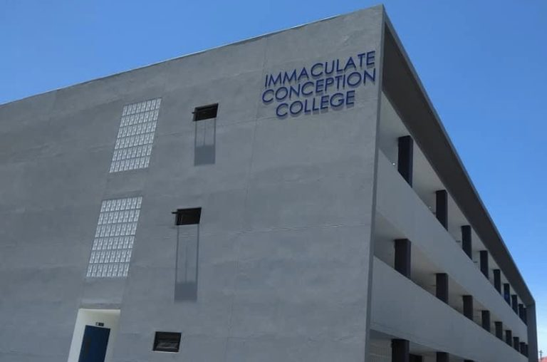

Nine decades, told year by year.
ICCBI's story since 1935 — a record of the milestones that shaped the school it is today.
Foundation
Immaculate Conception College is founded in Balayan by Rev. Fr. Aniceto Cordero, its establishment approved by Msgr. Alfredo Verzosa, Bishop of Lipa. The old convent becomes the school's first premises, and management is entrusted to the Augustinian Recollect Sisters under Sor Rita de la Immaculada Maria.

Primary Course Recognized
The A.R. Sisters offer the Primary course, which receives official recognition on April 16, 1937.
A New Name
The school's name is changed to Immaculate Conception College. 1938 – The General Intermediate Course was offered and obtained its recognition on April 7, 1938. Secondary Course was also opened and given recognition.

First Collegiate Courses
Several collegiate courses are offered — Preparatory Law, Associate in Commercial Science, and Junior Normal — under Sor Augustias del Divino Amor.
The Boys Department
Rev. Fr. Estanislao Cabrera, assisted by Ms. Corazon Ramos, opens the Boys Department of the school.

BSEd & Co-Education
The Bachelor of Science in Education is given recognition with the full cooperation of Rev. Fr. Estanislao Cabrera, who also realizes the need for co-education.
New Degree Programs
Additional courses are offered: Bachelor of Science in Elementary Education, Bachelor of Science in Home Economics, and Bachelor of Science in Commerce.
College Building Blessed
Construction of the College Building is finished, and the building is blessed by His Excellency Msgr. Olalia, Bishop of Lipa.
High School Building
The High School building is built, and made ready in 1990 — giving the secondary department a home of its own.

BS Accountancy
The Bachelor of Science in Accountancy is offered, launching ICC into professional licensure education.
Computer Courses Open
Additional courses open: Associate in Computer Technology, Computer Secretarial Course, and Bachelor of Science in Computer Engineering.

Talangpaz Building
The Talangpaz building — named after the A.R. foundresses, Mother Dionisia and Mother Cecilia Rosa Talangpaz — is constructed, and blessed on December 2, 2007.
CS & IT Programs
In the academic year that follows, ICC opens Bachelor of Science in Computer Science and Bachelor of Science in Information Technology.

HRM & Accreditation
BS Hotel and Restaurant Management is added to the curricular offerings, and all ICC programs go through the PACUCOA, PAASCU, and TESDA accreditation process.

Tourism Management
ICC offers BS Tourism Management, while TESDA-recognized Bookkeeping NC III is embedded in the BS Accountancy curriculum.

Senior High Launches
With the K to 12 curriculum, ICC is granted a provisional permit to operate Senior High effective SY 2016–2017 — offering ABM, STEM, and HUMSS strands, plus Home Economics and ICT Tech-Voc tracks.

Regina Angelorum & ANNEX
ICC keeps itself innovated with the two-storey Regina Angelorum building for its growing SHS population, and the three-storey ANNEX building for college and elementary pupils.
